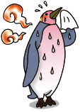
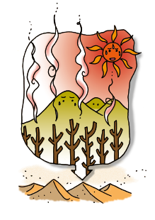

¿Tiene fiebre el planeta Tierra?
En el último siglo ha aumentado la temperatura promedio en el planeta Tierra. Si personificamos al planeta Tierra, podemos decir que tiene fiebre.
A esa fiebre se la llama calentamiento global, pero en realidad… ¿sabemos qué es? ¿Conocemos sus consecuencias para el ambiente?
El calentamiento global ocurre por el incremento de los gases de efecto invernadero (GEIs). Estos gases, como el dióxido de carbono y el metano, permiten que la luz solar atraviese la atmósfera y que gran parte de la misma quede atrapada en el planeta en forma de calor. El efecto invernadero es bueno, pero no en exceso.
Los GEIs están aumentando en la Tierra por la acción del ser humano. La manera en que más los emitimos es mediante la producción y la utilización de la energía, por eso es tan importante que aprendamos a cuidarla y a utilizarla de manera eficiente. También tenemos que aumentar el uso de fuentes de energía renovables que no contaminan la atmósfera, como la solar y la eólica.
Con la deforestación también se produce un aumento del efecto invernadero. Los árboles absorben dióxido de carbono y liberan oxígeno a la atmósfera. Por eso, deforestar selvas y bosques, además de ocasionar la pérdida de hábitat, reducir la biodiversidad y aumentar la extinción de especies animales y vegetales, contribuye a aumentar el calentamiento global.
 Actualmente, la temperatura promedio en el planeta ha aumentado en 0,5° C en comparación con la temperatura de hace 100 años y podría seguir subiendo hasta 2° C en 2100. Así como nos preocupamos cuando a nosotros nos sube de pronto la temperatura corporal en 2 grados y nuestras familias nos cuidan para que volvamos a sentirnos mejor, pensemos qué tenemos que hacer para ayudar a nuestro planeta y evitar que eso le suceda.
 Muchos científicos coinciden en que el cambio climático es la mayor amenaza ambiental de este siglo. El Panel Intergubernamental sobre Cambio Climático (IPCC) elabora informes científicos que especifican lo grave que este fenómeno será para la naturaleza y para la sociedad, la cual tendrá que afrontar eventos climáticos extremos como fuertes tormentas, inundaciones y sequías más frecuentes, aumento del nivel del mar debido al derretimiento del hielo de los polos y temperaturas más extremas.
El cambio climático puede afectar negativamente la producción de alimentos, la provisión de agua potable y puede también aumentar la propagación de enfermedades.
Los expertos coinciden en afirmar la importancia de reducir la emisión de GEIs. Nosotros también podemos colaborar con esta reducción. Lo primero que podemos hacer es medir nuestra huella de carbono para luego poder implementar un plan de acción.
Recordemos que es muy importante nuestra participación y responsabilidad para que todos estos problemas no sigan avanzando. Si entre todos ahorramos los recursos que tenemos, podremos detener el calentamiento global y la falta de energía.